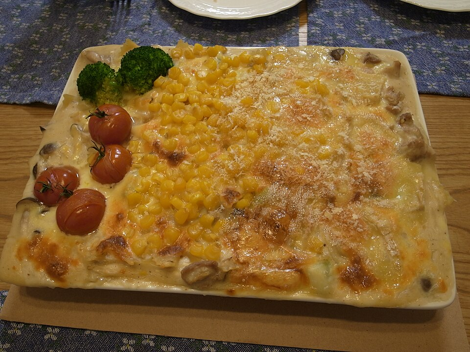

Aves · Frango
Gratinado de frango

Ingredientes
- 4 colheres (sopa) de óleo
- ½ kg de peito de frango em tirinhas
- 2 alhos-porós em fatias finas
- 1 colher (sopa) de tempero tipo Fondor
- 2 colheres (sopa) de farinha de trigo
- 2 xícaras (chá) de leite
- 1 lata de creme de leite
- ½ xícara (chá) de parmesão ralado
Modo de preparo
- Doure o frango no óleo; junte os alhos-porós e o tempero até amolecer.
- Polvilhe a farinha e acrescente o leite aos poucos até creme; junte o creme de leite sem ferver.
- Despeje em refratário, polvilhe o queijo e asse a 220 °C ~15 minutos. Sirva na hora.